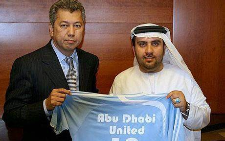
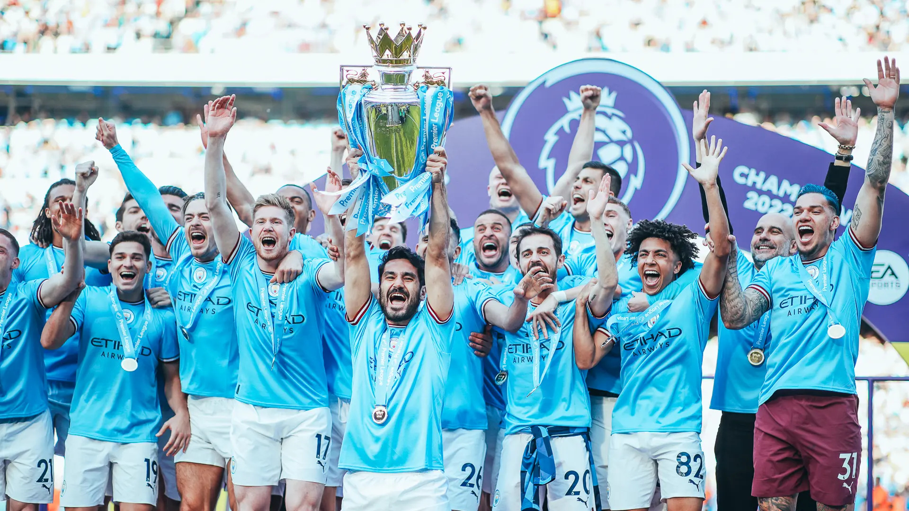
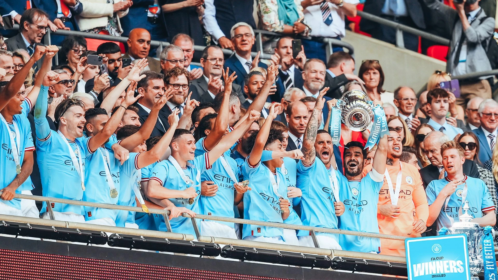
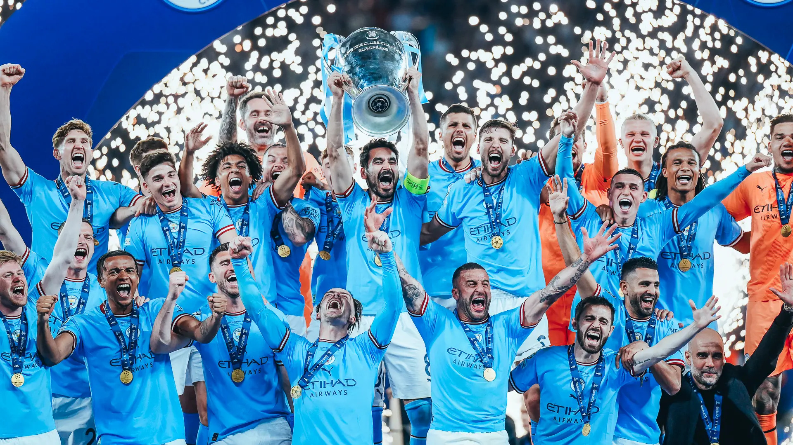

Manchester City Football Club are an English professional football club
based in Manchester that competes in the Premier League, the top flight
of English football. Founded in 1880, The club's home ground is the City of
Manchester Stadium in east Manchester, to which they moved in 2003,
having played at Maine Road since 1923. Manchester City adopted their sky blue
home shirts in 1894, in the first season with the current name. Over the course of its
history, the club has won nine league titles, seven FA Cups, eight League Cups,
six FA Community Shields, one UEFA Champions League, and one European Cup Winners' Cup
Manchester City traces its history to a football team founded in 1880 by members of St. Mark’s Church in Manchester. That team became Ardwick Association Football Club in 1887 and Manchester City Football Club (FC) in 1894. From 1894 to 2008 the club moved among the upper tiers of English football, regularly suffering relegation and winning promotion. It was champion of football’s second tier seven times, and it won the Football League First Division championship twice. After winning back-to-back promotions following the 1998–99 and 1999–2000 seasons that enabled the club to ascend to English football’s top-tier English Premier League, Manchester City was once again relegated to the sport’s second tier after their lacklustre 2000–01 season. The club returned to the Premier League in 2002, however, and has remained there. In 2003 Manchester City moved from Maine Road, the stadium where it had played since 1923, to the City of Manchester Stadium (later also called Etihad Stadium).

September 1, 2008 it was announced that the Abu Dhabi United Group had agreed to takeover Manchester City. One of the most significant moments in the Club’s long and rich history, the move proved to be the catalyst for a glittering period of success. In the 15 years since, the men’s first team have won almost every major competition in English football Under three different managers since 2008 - Roberto Mancini (2), Manuel Pellegrini (3) and Pep Guardiola (Current) (14) - 19.

Manchester City's 2022-2023 season was one for the history books, as they became the second English team to win the treble of the Premier League, FA Cup, and Champions League.The lows of their journey came early on, as they lost the Community Shield to Tottenham Hotspur and were knocked out of the League Cup by West Ham United. However, they bounced back in the Premier League, winning their fourth title in five years with a record 100 points.In the FA Cup, City faced their biggest test in the final against Manchester United. The match went to extra time, but City eventually won 2-1 thanks to goals from İlkay Gündoğan and Jack Grealish.The Champions League was where City really made their mark, reaching their second final in three years. They faced a tough test against Real Madrid, but came out on top 1-0 thanks to a goal from Rodri.City's treble winning season was a remarkable achievement, and they will be remembered as one of the greatest teams in Premier League history.


